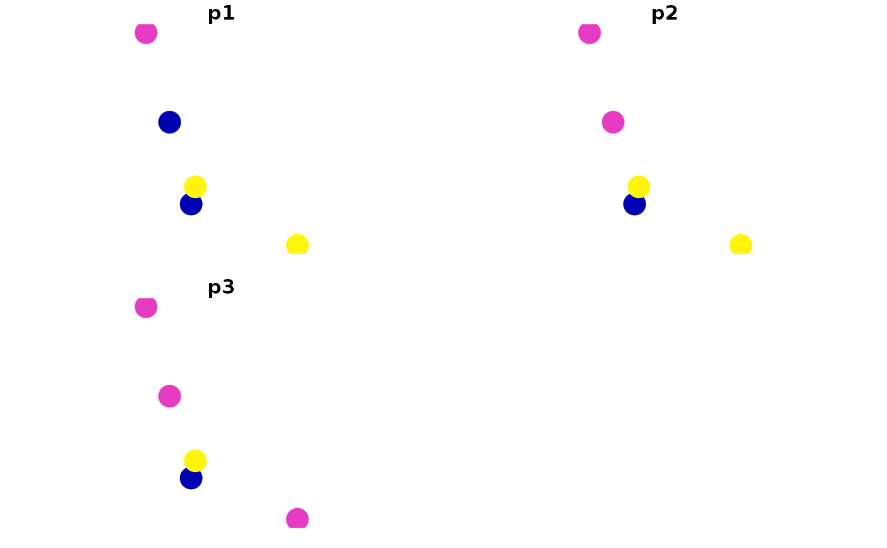
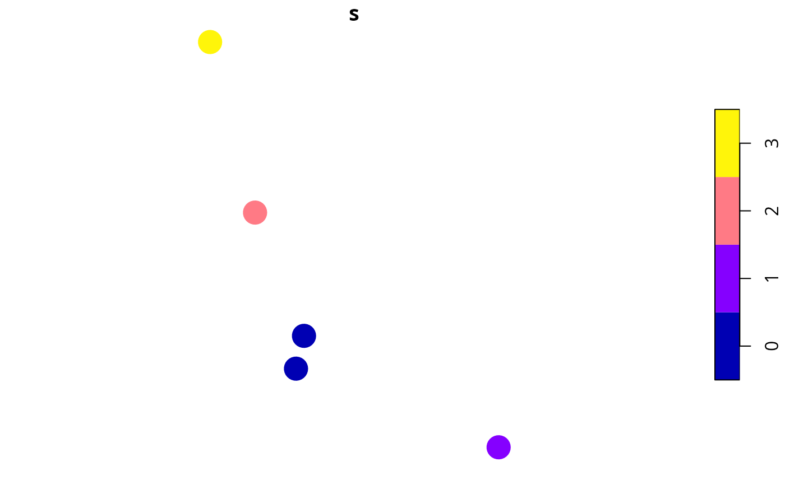

R/relative_site_uncertainty_scores.R
relative_site_uncertainty_scores.RdCalculate scores to describe the overall uncertainty of modeled species' occupancy predictions for each site. Sites with greater scores are associated with greater uncertainty. Note that these scores are relative to each other and uncertainty values calculated using different matrices cannot be compared to each other.
relative_site_uncertainty_scores(site_data, site_probability_columns)sf::sf() object with site data.
character names of numeric
columns in the argument to site_data that contain modeled
probabilities of occupancy for each feature in each site.
Each column should correspond to a different feature, and contain
probability data (values between zero and one). No missing (NA)
values are permitted in these columns.
A numeric vector of uncertainty scores. Note that
these values are automatically rescaled between 0.01 and 1.
The relative site uncertainty scores are calculated as joint Shannon's entropy statistics. Since we assume that species occur independently of each other, we can calculate these statistics separately for each species in each site and then sum together the statistics for species in the same site:
Let \(J\) denote the set of sites (indexed by \(j\)), \(I\) denote the set of features (indexed by \(i\)), and \(x_{ij}\) denote the modeled probability of feature \(i \in I\) occurring in sites \(j \in J\).
Next, we will calculate the Shannon's entropy statistic for each species in each site: \(y_{ij} = - \big( (x_ij \mathit{log}_2 x_{ij}) + (1 - x_ij \mathit{log}_2 1 - x_{ij}) \big) \)
Finally, we will sum the entropy statistics together for each site: \(s_{j} = \sum_{i \in I} y_{ij}\)
# set seed for reproducibility
set.seed(123)
# simulate data for 3 features and 5 sites
x <- tibble::tibble(x = rnorm(5), y = rnorm(5),
p1 = c(0.5, 0, 1, 0, 1),
p2 = c(0.5, 0.5, 1, 0, 1),
p3 = c(0.5, 0.5, 0.5, 0, 1))
x <- sf::st_as_sf(x, coords = c("x", "y"))
# print data,
# we can see that site (row) 3 has the least certain predictions
# because it has many values close to 0.5
print(x)
#> Simple feature collection with 5 features and 3 fields
#> Geometry type: POINT
#> Dimension: XY
#> Bounding box: xmin: -0.5604756 ymin: -1.265061 xmax: 1.558708 ymax: 1.715065
#> CRS: NA
#> # A tibble: 5 × 4
#> p1 p2 p3 geometry
#> <dbl> <dbl> <dbl> <POINT>
#> 1 0.5 0.5 0.5 (-0.5604756 1.715065)
#> 2 0 0.5 0.5 (-0.2301775 0.4609162)
#> 3 1 1 0.5 (1.558708 -1.265061)
#> 4 0 0 0 (0.07050839 -0.6868529)
#> 5 1 1 1 (0.1292877 -0.445662)
# plot sites' occupancy probabilities
plot(x[, c("p1", "p2", "p3")], pch = 16, cex = 3)

# calculate scores
s <- relative_site_uncertainty_scores(x, c("p1", "p2", "p3"))
# print scores,
# we can see that site 3 has the highest uncertainty score
print(s)
#> [1] 3 2 1 0 0
# plot sites' uncertainty scores
x$s <- s
plot(x[, c("s")], pch = 16, cex = 3)
